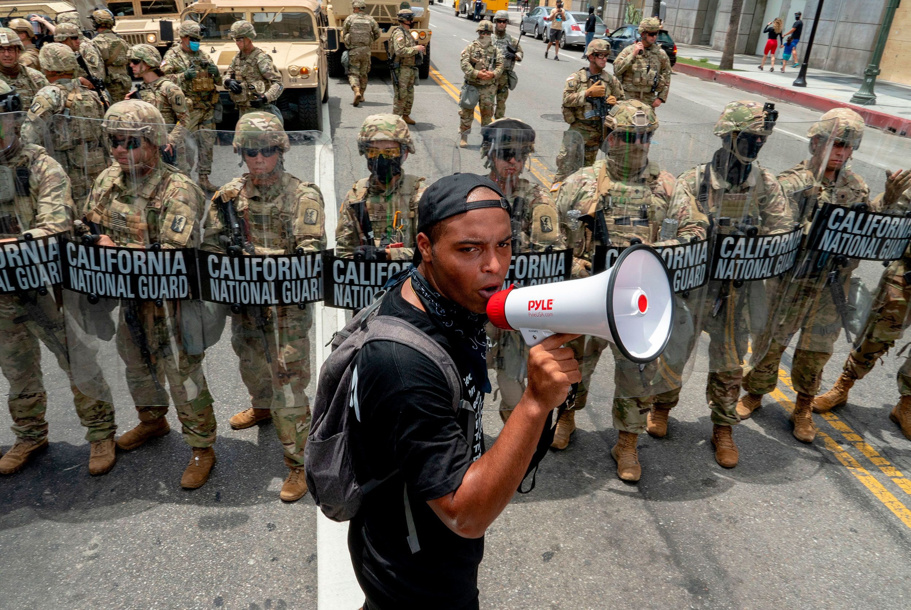

What is the National Guard?
The National Guard is the reserve of the Army and Air Force for the United States of America and the U.S. Department of Defense. The National Guard also always have active personnel ready for when disaster strikes, not only in the U.S; but all over the world. Through 96 State Partnership Program partnerships, the National Guard engages with 106 partner nations, ensuring the Department of Defense has capable, trusted and interoperable partners at our side — a key element of the National Defense Strategy.
Biggest Achievement
The biggest achievement made by the National Guard was proving that the U.S. was wiling to fight for their freedom during 1775 and starting the American Revolution. On April 19, 1775; the battles of Lexington and Concord were staryed by the National Guard as they fired the first shot and and held back the british from advancing and proving that even tho, their country was small, they were willing to do any sacrifices for the countrie's Independece.
How to Join The ?
To enlist in the , there are steps you must follow:
For more information you can visit .com